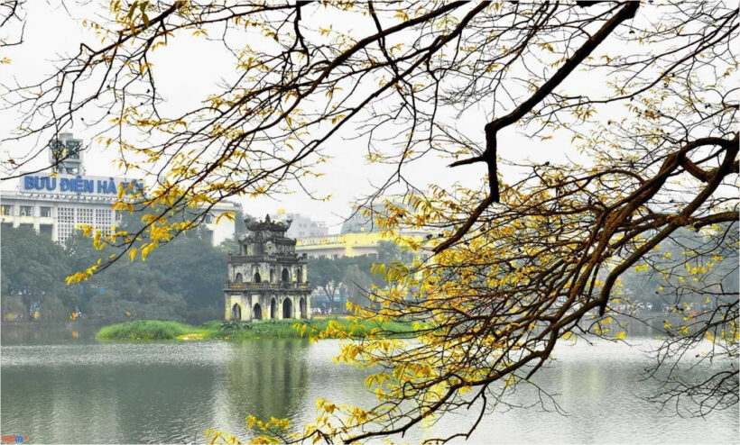
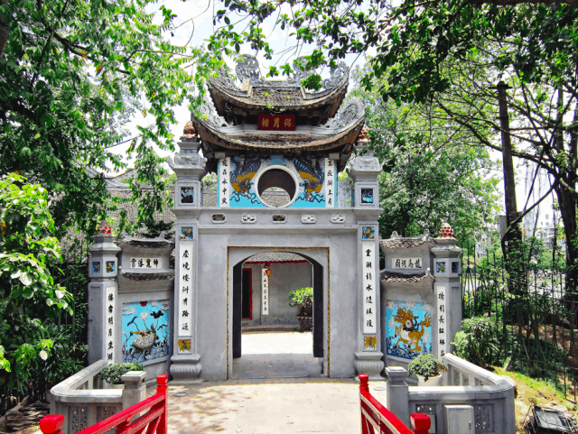
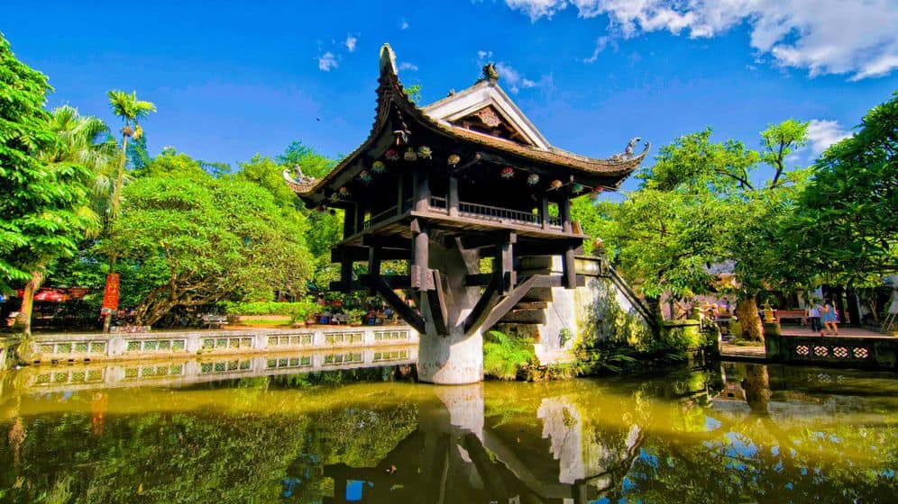
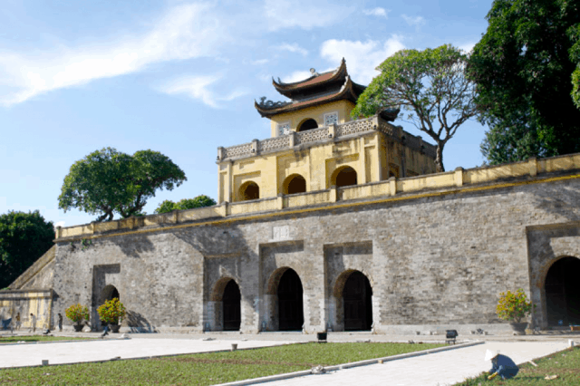
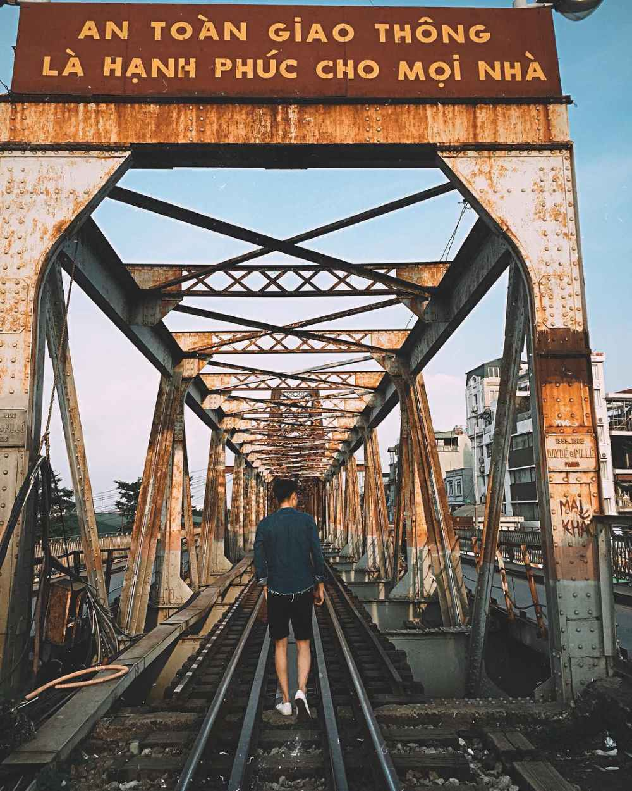

Top 10 danh lam thắng cảnh đẹp nhất Hà Nội
Đến Hà Nội, nên tham quan những danh lam thắng cảnh nào ở Hà Nội. Thủ đô của dân tộc ta có những cảnh đẹp mà không phải ai cũng biết. Cùng list.vn theo dõi bài viết Top 10 danh lam thắng cảnh ở Hà Nội đẹp ngất ngây.
tháp rùa Hà Nội
Đứng đầu trong danh sách những danh lam thắng cảnh không thể bỏ qua khi du lịch Hà Nội chính là Hồ Hoàn Kiếm. Hồ nằm ở vị trí trung tâm của thành phố và được ví như “trái tim” của thủ đô. Hồ Hoàn Kiếm còn có tên gọi khác là Hồ Gươm bởi nó gắn liền với sự tích trả gươm thần huyền thoại của vua Lê Lợi cho Rùa Vàng. Mặt hồ xanh màu rêu cổ kính như một tấm gương khổng lồ soi bóng những cây cổ thụ cành lá sum suê, những rặng liễu rủ thướt tha cùng toà nhà Bưu điện và dãy nhà cao tầng xung quanh vươn lên giữa trời xanh.
Đền Ngọc Sơn
Cầu Thê Húc màu đỏ son, cong cong dẫn vào đền Ngọc Sơn ẩn sau những bóng đa cổ thụ. Đền được xây dựng vào thế kỉ 19 và là công trình cụ thể về không gian và tạo tác kiến trúc. Với sự kết hợp hài hoà giữa đền và hồ, Đền Ngọc Sơn kết hợp với Hồ Hoàn Kiếm đã tạo có thể một tổng thể kiến trúc Thiên – Nhân hợp nhất, mang lại một môi trường chan hoà giữa thiên nhiên và chúng ta.Người dân cùng nhiều du khách khi dạo bước bên Hồ Gươm vẫn thường hay đi vào Đền Ngọc Sơn thắm nén hương và nguyện cầu những điều tốt đẹp. Đền Ngọc Sơn, cộng với Hồ Hoàn Kiếm, Tháp Rùa, Cầu Thê Húc, Tháp Bút, Đài Nghiên đã trở nên một cụm di tích lịch sử và danh lam thắng cảnh Hà Nội mang nét kiến trúc đặc sắc, tiêu biểu mà du khách không thể làm ngơ khi đến thăm thủ đô.
Nhà hát lớn
Toạ lạc giữa ngã tư phố Tràng Tiền và Ngô Quyền, Nhà hát Lớn Hà Nội được xây dựng vào những năm đầu của thế kỉ XX và từ đó đến nay vẫn luôn là công trình kiến trúc và văn hoá bậc nhất của Thủ đô. Được thiết kế theo cách điệu classic Pháp với nhiều đường nét và sắc màu đồng nghĩa với các nhà hát ở châu Âu, Nhà hát Lớn đã trở nên một trung tâm văn hoá xảy ra nhiều sự kiện và hoạt động biểu diễn nghệ thuật sân khấu lớn ở Việt Nam.

Hồ Tây
Hồ Tây là hồ lớn nhất tại Hà Nội với hơn 500ha với cung đường hồ dài 17km. Nếu như có điều kiện bạn cần phải dùng xe máy đi một vòng quanh Hồ Tây, để ngắm toàn cảnh sự lãng mạng bên mặt hồ trong xanh, kết hợp với những cơn gió mát rượi.

tháp rùa Hà Nội
Đứng đầu trong danh sách những danh lam thắng cảnh không thể bỏ qua khi du lịch Hà Nội chính là Hồ Hoàn Kiếm. Hồ nằm ở vị trí trung tâm của thành phố và được ví như “trái tim” của thủ đô. Hồ Hoàn Kiếm còn có tên gọi khác là Hồ Gươm bởi nó gắn liền với sự tích trả gươm thần huyền thoại của vua Lê Lợi cho Rùa Vàng. Mặt hồ xanh màu rêu cổ kính như một tấm gương khổng lồ soi bóng những cây cổ thụ cành lá sum suê, những rặng liễu rủ thướt tha cùng toà nhà Bưu điện và dãy nhà cao tầng xung quanh vươn lên giữa trời xanh.
Chùa Một Cột
Nằm ngay lăng chủ tich Hồ Chí Minh, chùa một cột là một thắng cảnh độc đáo, quyến rũ rất nhiều du khách đến thăm quan và chiêm ngưỡng hàng năm. Với kiến trúc đẹp, lạ mắt(kết cấu hình vuông nằm ở trên trụ đá giữa hồ sen) tạo có thể vẻ đẹp tựa như một đóa hoa sen nổi lên giữa mặt hồ.
Lăng Chủ Tịch Hồ Chí Minh
Luôn là điểm đến được khách du lịch muôn phương lựa chọn ghé thăm đầu tiên mỗi khi có dịp tìm về với Hà Nội, nơi để bạn bày tỏ niềm kính yêu đến Vị Cha Già của dân tộc. Lăng Bác nằm ngay tại Quảng trường Ba Đình lịch sử, được bao phủ bởi sắc xanh của các bóng cây rộng lớn, tại đây bạn được dâng hướng viếng Bác và được chiêm ngưỡng vẻ đẹp kiến trúc nữa đấy.

Hoàng Thăng Long
Nằm trên con đường Hoàng Diệu, Hoàng thành Thăng Long là một di sản văn hoá toàn cầu luôn đi chung với lịch sử của kinh thành Thăng Long – Hà Nội dưới thời các triều đại Lý, Trần, Lê và triều Nguyễn. Đây là một công trình kiến trúc đồ sộ và mang nhiều giá trị lịch sử và khảo cổ học đặc biệt. Trong những công trình cổ bên trong Hoàng Thành, Điển hình là di tích Cột cờ Hà Nội (hay còn được nhắc đên là Kỳ Đài Hà Nội) gắn liền với nhiều sự kiện lịch sử của dân tộc. Khi cách mạng tháng Tám thành công, lần đầu tiên lá cờ đỏ sao vàng trên Cột cờ Hà Nội tung bay phấp phới giữa bầu trời thủ đô.
Cầu Long Biên
Gắn liền với hình ảnh Hà Nội thương nhớ, cầu Long Biên được một số bạn xác định ghé đến để thăm quan và check in lưu lại làm kỷ niệm. Cầu Long Biên được tạo ra vào năm 1899, đã trải qua hai cuộc kháng chiến hào hùng của dân tộc, cũng thế nên mà được gọi với cái tên hết sức thân thương “người bạn đồng hành” cùng thủ đô Hà Nội.
